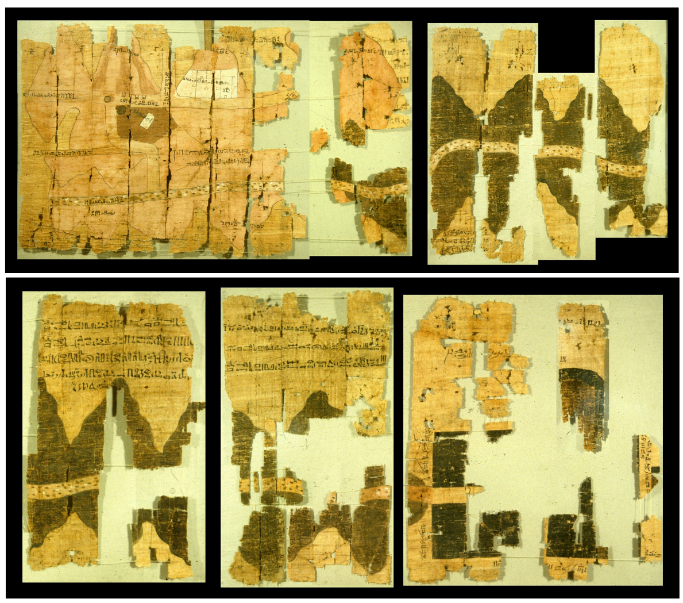

Medya manşetlerinde sıkça şu sarsıcı verilerle karşılaşıyoruz: “1990’dan bu yana 420 milyon hektar orman yok oldu”, “Gezegenin karasal alanlarının %40’ı bozunmuş durumda” veya “Sulak alanlarımızın üçte birini kaybettik”.
Peki, devasa büyüklükteki alanları işaret eden rakamları nasıl bu kadar emin bir şekilde telaffuz edebiliyoruz? Cevap, modern uzaktan algılama teknolojilerinin en güçlü ürünlerinden birinde saklı: arazi örtüsü veri setleri.
Arazi Örtüsü Neyi Anlatır?
“Arazi” yalnızca üzerinde yürüdüğümüz bir yüzey değil; suyun kalitesini ve akışını, iklimin yerel ve bölgesel dinamiklerini, biyoçeşitliliğin dağılışını belirleyen; aynı zamanda barınma ve gıda üretimi gibi temel ihtiyaçların gerçekleştiği canlı bir sistemdir. Bu sistemde “nerede ne var?” sorusuna düzenli ve ölçülebilir biçimde yanıt verebilmek, yalnızca bugünü anlamak için değil, değişimi izleyerek yarını yönetebilmek için de kritiktir.
Burada yazıya başlamadan önce, çoğu zaman birbirine karıştırılan iki kavramı netleştirelim. Arazi örtüsü haritaları, yeryüzünün fiziksel olarak neyle kaplı olduğunu (orman, tarım, su yüzeyi, çıplak toprak, yapılı alan gibi) tanımlar. Arazi kullanımı haritaları ise aynı alanların hangi amaçla kullanıldığını (tarımsal üretim, rekreasyon, sanayi, yerleşim planlaması vb.) anlatır. Bu iki kavram günlük dilde birbirine çok yakın görünse de uzaktan algılama açısından küçük bir fark büyük sonuç doğurur: Uydu sensörü önce “örtüyü” yakalar; “kullanım” ise çoğu zaman ek bağlam, idari bilgi ve yorum gerektirir.
Bu noktada mesele basit ama güçlü iki soruya dayanır: Doğal kaynaklar nerede ve ne durumda? Bu durum zaman içinde nasıl değişiyor?
Papirüsten Mermere: Uydu Öncesi Dönemde Arazi Örtüsü Haritaları
Küresel arazi örtüsü veri setleri modern bir çağın ürünü gibi görünse de “kaynakları ve örtüyü kayda geçirme” fikri çok daha eskidir. Bu hikâyenin en çarpıcı başlangıçlarından biri, MÖ 1150 civarına tarihlenen Torino (Turin) Papirüs Haritasıdır. Bu harita, Mısır’ın Doğu Çölü’nde Wadi Hammamat boyunca bir güzergâhı betimler; altın madeni ve taş ocağı gibi kaynakların yanı sıra seferle ilişkili alanları da işaretler ve literatürde en erken jeolojik harita örnekleri arasında anılır.4 Buradaki motivasyon şaşırtıcı biçimde “bugüne” benzer: Kaynak nerede, oraya nasıl gidilir ve faaliyet nasıl yönetilir?

Milattan sonraki yüzyıllarda bu motivasyon, devlet yönetimi ve vergi düzeniyle birleşerek daha sistematik biçimler aldı. Roma dünyasında arazi ölçümü ve kadastral kayıtlar, mülkiyetin ve üretimin idaresi için kritik bir araçtı; bu kayıtlar bugünkü anlamda bir “arazi örtüsü rasterı” sunmasa bile, belirli dönemlerin peyzajını ve kullanımını okumamıza imkân veren güçlü bir altyapı oluşturdu.5
Zaman ilerledikçe, kaynak odaklı tematik belgelemenin bir başka damarını madencilik oluşturdu. 16. yüzyılda maden sahalarını, işletim düzenini ve teknik altyapıyı çizimlerle betimleyen eserler; karar vericiye “nerede hangi kaynak var ve nasıl işletiliyor?” sorusunu görsel bir dille yanıtlamaya başladı. Bu yaklaşım, günümüzün “katman” mantığını sezgisel olarak haber veriyordu: kaynak, tesis, ulaşım, yerleşim ve işgücü aynı hikâyenin parçalarıydı.
19. yüzyıla gelindiğinde ise parsel bazlı haritalama, araziyi sistematik biçimde kayda geçirmenin en görünür araçlarından biri haline geldi. İngiltere ve Galler’de 1836 sonrası üretilen tithe haritaları, parselleri numaralandırıp kayıtlarla eşleştirerek tarla, çayır, mera ve orman gibi kategorileri belgeliyor; temel motivasyon vergi düzenini daha adil ve yönetilebilir hale getirmekti.6 Uydu öncesi dönemde “sınıflandırma” fikrinin ne kadar somut ve idari ihtiyaç temelli olduğunu görmek için bu haritalar çok öğreticidir.
Tüm bu örneklerde modern sensörler yoktu; ama soru aynıydı. Fark, artık bu soruyu yerel ölçekte değil, küresel ölçekte ve düzenli aralıklarla yanıtlamak zorunda olmamızdı.
Uydu Çağı: Küresel Ölçekte Aynı Dili Konuşmak
20. yüzyılın ikinci yarısında asıl kırılma, yeryüzünü tekrar tekrar gözleyebilen uydu sistemleriyle geldi. CORONA gibi erken dönem yüksek çözünürlüklü görüntüler, başlangıçta bilimsel amaçla tasarlanmamış olsa da, daha sonra sivil kullanıma açılan arşivleri sayesinde “geçmişe dönük arazi değişimi” çalışmalarına benzersiz bir zaman penceresi sundu.7
Bu çizgiyi operasyonel hale getiren büyük adım ise Landsat ile atıldı. 23 Temmuz 1972’de fırlatılan ERTS-1 (sonradan Landsat 1), doğal kaynakların sistematik gözlemi için tasarlanmış ilk uydu programlarından biri olarak kabul edilir ve tarım, orman, su ve jeoloji gibi alanlarda karşılaştırılabilir veri üretme fikrini ana akım haline getirir.8
Uydu verisi olgunlaştıkça, arazi örtüsü haritaları da yalnızca akademik bir ürün olmaktan çıkıp kamu politikası ve planlama altyapısına dönüştü. Avrupa’da 1985’te başlatılan CORINE programı, kıta ölçeğinde karşılaştırılabilir arazi örtüsü envanteri üretmeyi hedefleyerek bu dönüşümün sembol örneklerinden biri oldu.9 Benzer biçimde farklı ülkelerde ulusal ölçekli ürünler olgunlaştı; ABD’de NLCD (National Land Cover Database) yaklaşımı, Landsat tabanlı sınıflandırma ve değişim izlemenin kurumsallaşmasına iyi bir örnek olarak gösterilir.10
2000’lerle birlikte küresel çevre değişikliği araştırmalarının ivme kazanması, küresel ve düzenli güncellenen veri setlerine olan ihtiyacı daha da görünür kıldı. MODIS tabanlı yıllık arazi örtüsü ürünleri, iklim modelleri ve ekosistem analizleri için “zaman serisi” mantığında girdiler sağlayarak bu dönemin en belirgin adımlarından birini temsil eder.11 Ardından açık veri politikaları, hesaplama altyapıları ve Copernicus gibi programların operasyonel servis mantığı, arazi örtüsü haritalarını daha erişilebilir ve daha güncel hale getiren bir ekosistem oluşturdu.12
Bugün geldiğimiz noktada, orta-yüksek çözünürlüklü Sentinel-2 gözlemleri, derin öğrenme yaklaşımları ve küresel servisler sayesinde “harita üretmek” kadar “değişimi yakalamak” da hızlandı. Ancak bu yazının ana mesajı şudur: Küresel arazi örtüsü veri setleri, bir teknoloji gösterisi değil; dünyanın en temel çevresel sorularına ölçülebilir yanıt verebilmenin temel altyapısıdır.
Küresel Arazi Örtüsü Veri Setleri Neden Bu Kadar Çoğaldı?
Bugün tek bir “küresel arazi örtüsü haritası”ndan değil, farklı amaçlarla üretilmiş çok katmanlı bir veri ekosisteminden söz ediyoruz. Bunun nedeni oldukça açık: Her araştırma sorusu aynı mekânsal ayrıntıya, aynı zaman aralığına ve aynı sınıflandırma şemasına ihtiyaç duymaz. Bir kent çevresindeki yeni yapılaşmayı izlemek için 10 metrelik Sentinel-2 tabanlı bir ürün anlamlı olabilirken, otuz yıllık küresel eğilimleri okumak için daha kaba çözünürlüklü ama uzun zaman serisine sahip ürünler daha işlevsel hale gelebilir.
Bu nedenle küresel arazi örtüsü veri setlerini “hangisi en iyi?” sorusuyla değil, “hangi problemi çözmek için hangi veri seti daha uygun?” sorusuyla değerlendirmek gerekir. Çünkü yüksek mekânsal çözünürlük her zaman daha doğru sonuç anlamına gelmez; benzer biçimde yıllık üretilen bir harita da her zaman güvenilir bir değişim analizi sunmaz. Veri setinin üretim algoritması, eğitim verisi, sınıf tanımları, doğruluk değerlendirmesi ve sensör kaynağı en az piksel boyutu kadar önemlidir.
10 Metre Çağı: Daha Ayrıntılı, Daha Güncel, Ama Daha Dikkatli Okunması Gereken Haritalar
Son yıllarda küresel arazi örtüsü haritalarındaki en dikkat çekici dönüşüm, 10 metre çözünürlüklü ürünlerin yaygınlaşması oldu. ESA WorldCover, Dynamic World, ESRI 10m Land Use/Land Cover ve FROM-GLC10 gibi veri setleri; Sentinel-1, Sentinel-2 ve derin öğrenme tabanlı sınıflandırma yaklaşımlarıyla küresel ölçekte daha ayrıntılı yüzey bilgisi sunmaya başladı. Bu ürünler özellikle küçük parsellerin, dar kıyı şeritlerinin, yerleşim saçaklanmasının, orman açıklıklarının ve tarım alanı sınırlarının daha iyi ayırt edilmesi açısından önemli bir avantaj sağlar.13–16
Ancak 10 metre çözünürlük, değişim analizi açısından otomatik olarak “daha güvenli” bir zemin oluşturmaz. Örneğin farklı yıllara ait haritalar farklı algoritma sürümleriyle üretildiyse, iki yıl arasındaki fark yalnızca gerçek arazi örtüsü değişimini değil, sınıflandırma yöntemindeki değişimi de yansıtabilir. Bu nedenle özellikle ESA WorldCover 2020 ve 2021 gibi ürünler karşılaştırılırken algoritma versiyonu ve ürün dokümantasyonu mutlaka dikkate alınmalıdır.
Dynamic World bu noktada ayrıca dikkat çekicidir. Klasik yıllık arazi örtüsü haritalarından farklı olarak, her piksel için sınıf olasılıkları üretir ve yakın gerçek zamanlı izleme mantığına daha yakın çalışır. Bu yapı, sel sonrası geçici su yüzeyleri, hasat sonrası çıplak toprak, mevsimsel tarımsal döngüler veya hızlı kentsel dönüşüm gibi dinamik süreçlerde kullanıcılara esneklik sağlar. Fakat bu esneklik aynı zamanda yorum sorumluluğunu artırır: Tek bir “etiket” yerine olasılık katmanlarını, tarih seçimini ve mevsimselliği birlikte okumak gerekir.
30 Metre ve 100 Metre Ürünler: Zaman Serisi, Tutarlılık ve Küresel Karşılaştırılabilirlik
Daha kaba çözünürlüklü ürünleri yalnızca “eski” ya da “daha az ayrıntılı” olarak görmek doğru değildir. GlobeLand30 ve GLC-FCS30 gibi 30 metre çözünürlüklü ürünler, küresel ölçekte ayrıntı ile hesaplanabilirlik arasında güçlü bir denge sunar. Özellikle bölgesel ölçekli arazi örtüsü değişimi, orman-tarım dönüşümü, çıplak alan yayılımı veya geniş sulak alan sistemlerinin izlenmesi gibi çalışmalarda 30 metre ürünler hâlâ çok değerlidir.17,18
Copernicus Global Land Cover 100m ürünü ise daha kaba bir çözünürlükle çalışmasına rağmen, yıllık küresel kapsamı, orman alt sınıfları ve fraksiyon katmanları sayesinde ekosistem modelleme, biyokütle tahmini, iklim çalışmaları ve kıtasal ölçekli politika analizleri için güçlü bir girdi sunar.19 Benzer biçimde MODIS MCD12Q1 gibi 500 metre ürünler, piksel düzeyinde ayrıntıdan çok uzun dönemli küresel eğilimleri, iklim modellerine girdi oluşturmayı ve büyük ölçekli ekolojik karşılaştırmaları destekler.11
Bu noktada çözünürlüğü bir merdiven gibi düşünmek faydalıdır. 10 metre ürünler daha fazla mekânsal ayrıntı verir; 30 metre ürünler çoğu çevresel analiz için güçlü bir denge sağlar; 100 metre ve üzeri ürünler ise küresel tutarlılık, hesaplama kolaylığı ve uzun dönemli modelleme açısından öne çıkar. Yani piksel küçüldükçe her şey iyileşmez; yalnızca sorunun ölçeği değişir.
Başlıca Küresel Arazi Örtüsü Veri Setleri
Aşağıdaki özet görsel, günümüzde sık kullanılan küresel arazi örtüsü veri setlerini çözünürlük, zaman kapsamı, sınıf sayısı ve veri sağlayıcı bakımından birlikte okumayı kolaylaştırır. Görsele bakarken özellikle üç noktaya dikkat etmek gerekir: veri setinin hangi sensörlerden üretildiği, hangi yılları kapsadığı ve sınıf tanımlarının çalışmanızdaki sınıflarla ne kadar örtüştüğü.

Veri Seti Seçerken Beş Kritik Soru
Bir arazi örtüsü veri setini seçerken ilk bakılan özellik çoğu zaman mekânsal çözünürlüktür. Oysa karar süreci yalnızca “10 metre mi, 30 metre mi?” sorusuna indirgenmemelidir. İlk kritik soru, çalışmanın ölçeğidir. Küçük tarım parselleri, kentsel saçaklanma veya dar riparyan zonlar inceleniyorsa yüksek çözünürlüklü ürünler avantaj sağlayabilir. Buna karşılık kıtasal ölçekte orman kaybı eğilimi, kuraklık baskısı veya ekosistem modellemesi çalışılıyorsa daha kaba ama daha tutarlı zaman serileri tercih edilebilir.
İkinci soru, zaman kapsamıdır. Bir veri seti tek bir referans yılı için çok başarılı olabilir; ancak uzun dönemli değişim analizi için yeterli olmayabilir. Üçüncü soru, sınıf şemasının çalışmanın amacına uygunluğudur. Örneğin bazı veri setleri “orman” sınıfını tek bir kategori olarak verirken, bazıları kapalı orman, açık orman, yaprak döken orman veya iğne yapraklı orman gibi alt sınıflar sunar. Bu fark, özellikle ormancılık, karbon izleme ve habitat uygunluğu çalışmalarında doğrudan sonucu etkiler.
Dördüncü soru, sensör ve üretim metodolojisidir. Optik veriler bulutluluk ve atmosferik koşullardan etkilenebilir; radar verileri ise yapı, nem ve yüzey pürüzlülüğü hakkında farklı türde bilgi taşır. Bu nedenle Sentinel-1 ve Sentinel-2 gibi farklı veri kaynaklarını birleştiren ürünler, bazı coğrafyalarda daha kararlı sonuçlar verebilir. Beşinci ve belki de en önemli soru ise doğruluk değerlendirmesidir. Bir haritanın genel doğruluğu yüksek görünse bile, belirli sınıflarda kullanıcı doğruluğu veya üretici doğruluğu düşük olabilir. Bu nedenle tek bir genel doğruluk değeriyle karar vermek yerine sınıf bazlı hata yapısını incelemek gerekir.
Değişim Analizinde En Sık Yapılan Hata
Arazi örtüsü veri setleriyle çalışırken en cazip ama en riskli işlem, iki farklı yılı üst üste koyup “değişim haritası” üretmektir. Bu yaklaşım ilk bakışta oldukça doğrudan görünür: 2015’te orman olan bir piksel 2020’de tarım görünüyorsa, orman tarıma dönüşmüştür. Fakat pratikte durum her zaman bu kadar basit değildir. Sınıflandırma hataları, mevsim farkları, bulut maskesi sorunları, farklı sensör kombinasyonları, algoritma güncellemeleri ve sınıf tanımlarındaki küçük değişimler, gerçek değişim ile haritalama hatasını birbirine karıştırabilir.
Bu nedenle değişim analizi yapılırken veri setinin teknik dokümantasyonu okunmalı, mümkünse aynı ürün ailesi içinde kalınmalı, sınıflar sadeleştirilmeli ve sonuçlar bağımsız doğrulama noktalarıyla desteklenmelidir. Özellikle yerel ölçekte karar üretilecekse, küresel arazi örtüsü haritaları çoğu zaman başlangıç verisi olarak görülmeli; arazi gözlemleri, yüksek çözünürlüklü görüntüler veya ulusal veri tabanlarıyla birlikte değerlendirilmelidir.
Peki Bu Veri Setleri Ne İşe Yarar?
Küresel arazi örtüsü veri setlerinin kullanım alanı yalnızca “harita üretmek” ile sınırlı değildir. Ormansızlaşma ve yeniden ormanlaşma süreçlerinin izlenmesi, tarımsal alan genişlemesinin belirlenmesi, kentsel büyümenin modellenmesi, sulak alan kayıplarının takibi, yangın sonrası peyzaj değişiminin değerlendirilmesi, habitat parçalanmasının analizi ve iklim modellerine yüzey girdisi sağlanması bu veri setlerinin başlıca kullanım alanları arasındadır.
Ayrıca bu veri setleri, sürdürülebilir kalkınma hedefleriyle ilişkili göstergelerin izlenmesinde de önemli rol oynar. Örneğin arazi tahribatının dengelenmesi, karasal ekosistemlerin korunması, su kaynaklarının yönetimi ve iklim değişikliğine uyum politikaları, güvenilir arazi örtüsü bilgisi olmadan sağlıklı biçimde değerlendirilemez. Bu nedenle arazi örtüsü verileri, yalnızca uzaktan algılama uzmanlarının kullandığı teknik ürünler değil; çevre yönetimi, planlama, tarım, ormancılık, afet yönetimi ve iklim politikalarının ortak dilidir.
Sonuç: Haritalar Sadece Yüzeyi Değil, Değişimin Hikâyesini Anlatır
Küresel arazi örtüsü veri setleri bize dünyanın yüzeyini sınıflandırılmış pikseller halinde sunar. Fakat bu piksellerin anlattığı şey yalnızca “orman”, “tarım”, “su” veya “yerleşim” değildir. Her piksel, insan faaliyetleriyle doğal süreçlerin kesiştiği bir hikâyenin küçük bir parçasıdır. Bir yerde orman alanının daralması, başka bir yerde tarımın yoğunlaşması, kıyıda yapılı alanların büyümesi veya bir sulak alanın gerilemesi; aslında gezegenin nasıl değiştiğini gösteren mekânsal izlerdir.
Bu yüzden arazi örtüsü veri setlerini yalnızca indirilecek raster dosyaları olarak değil, karar üretmeyi mümkün kılan bilimsel altyapılar olarak görmek gerekir. Doğru veri setini doğru soruyla eşleştirdiğimizde, bu haritalar yalnızca bugünü göstermekle kalmaz; geçmişte neyin değiştiğini anlamamıza ve gelecekte neyi korumamız gerektiğini daha güçlü biçimde tartışmamıza yardımcı olur.
Kaynakça
- FAO. (2020). Global Forest Resources Assessment 2020 – Main report. Food and Agriculture Organization of the United Nations.
- UNCCD. (2022). Desertification and Drought Day: Facts and figures (Land degradation statistics). United Nations Convention to Combat Desertification.
- Ramsar Convention on Wetlands. (2018). Global Wetland Outlook: State of the world’s wetlands and their services to people.
- Harrell, J. A., & Brown, V. M. (1992). The world’s oldest surviving geological map: The Turin Papyrus Map. Journal of Geology, 100(1), 3–18.
- Dilke, O. A. W. (1985). Greek and Roman Maps. Thames and Hudson.
- Kain, R. J. P., & Prince, H. C. (2000). Tithe Surveys of England and Wales. Cambridge University Press.
- USGS. (n.d.). Declassified satellite imagery (CORONA): Data access and overview. U.S. Geological Survey.
- USGS. (n.d.). Landsat 1 (ERTS-1) mission overview and history. U.S. Geological Survey.
- European Environment Agency. (n.d.). CORINE Land Cover: Background and programme history. EEA.
- USGS. (n.d.). National Land Cover Database (NLCD): Product suite and history. U.S. Geological Survey.
- Friedl, M. A., et al. (2010). MODIS Collection 5 global land cover: Algorithm refinements and characterization. Remote Sensing of Environment, 114(1), 168–182.
- Copernicus Land Monitoring Service. (n.d.). Service history and operational products. European Union / Copernicus.
- European Space Agency. (n.d.). ESA WorldCover: Worldwide land cover mapping and data access. ESA WorldCover.
- Brown, C. F., Brumby, S. P., Guzder-Williams, B., et al. (2022). Dynamic World, near real-time global 10 m land use land cover mapping. Scientific Data, 9, 251.
- Esri. (2024). Esri releases latest land cover map with updated Sentinel-2 satellite data. Esri Newsroom.
- Gong, P., Liu, H., Zhang, M., et al. (2019). Stable classification with limited sample: Transferring a 30-m resolution sample set collected in 2015 to mapping 10-m resolution global land cover in 2017. Science Bulletin, 64(6), 370–373.
- National Geomatics Center of China. (n.d.). GlobeLand30: 30-meter global land cover dataset.
- Zhang, X., Liu, L., Chen, X., Gao, Y., Xie, S., & Mi, J. (2021). GLC_FCS30: Global land-cover product with fine classification system at 30 m using time-series Landsat imagery. Earth System Science Data, 13, 2753–2776.
- Copernicus Land Monitoring Service. (n.d.). Land Cover 2015–2019 (raster 100 m), global, yearly – version 3. European Union / Copernicus.
- ESA Climate Change Initiative. (n.d.). Land Cover CCI product user guide and annual global land cover maps.
- NASA LP DAAC. (n.d.). MCD12Q1.061 MODIS Land Cover Type Yearly Global 500m. NASA Earthdata.